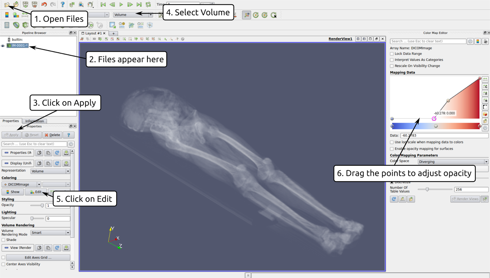

CT Scan examinations often come with a data CD that contains the raw images of the scan. These can be easily visualized in 3D using freely available software such as Paraview. The steps to do this are as follows:
Preparation:
Find the raw images. These can have an ending .dcm but sometimes the files have no ending at all. The folder structure that I received on a CD from my particular examination looked as follows:
IMAGES/ └── PAT00000 └── ST000000 ├── SE000000 │ └── CT000000 ├── SE000001 │ ├── CT000000 │ ├── CT000001 │ ├── CT000002 │ ├── CT000003 │ ├── CT000[...] │ └── CT000213 └── SE000002 └── CT000000The folder SE000001 contains the set of sections that you want to visualize. Alternatively you can explore the OsiriX database that contains publicly available datasets.
Copy all images to a new folder on your computer and change the file endings to .dmc
dcm images can be raw or compressed (as is the case for the OsiriX database). If the files are compressed, you might get an error later in paraview. In this case, you can use the tool gdcmconv to uncompress them in the terminal (bash) using the line "for file in *.dcm; do gdcmconv -i $file –raw -o $file; done".
Open the files in Paraview
- Open Paraview and click on file -> open. Browse to the folder that contains the set of sections. The files should show up as a collapsed list, e.g. as CT…dcm . Open them and select DICOM Files (directory) as reader that should be used. If you get an error (warnings are often OK), check that the files are really uncompressed, as explained above.
- If everything went well, you should see an object appearing in the paraview “pipeline browser” (usually on the left).
- Further down in the “Properties” window, click on “Apply” to display the data
- Once the data is loaded, you can select “Volume” rendering in the top toolbar instead of “Outline”.
- In the Properties window click on “Edit” under the “Coloring” tab. You should see a new window on the right hand side that you can use to adapt the opacity and color of the volume.
- Click the colorbar to add new points. Lower them to make regions with certain data values more transparent. (see image below)
